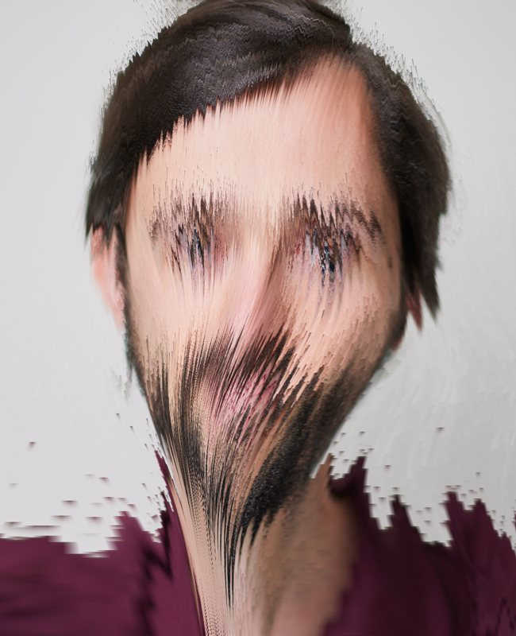
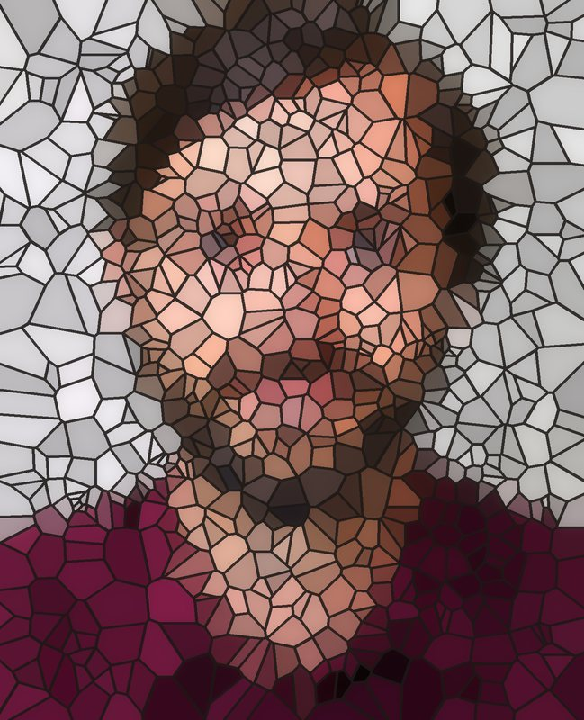
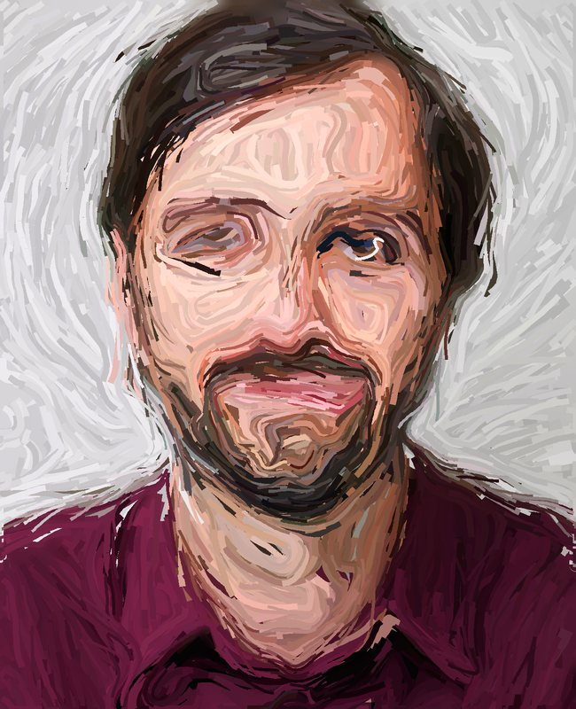
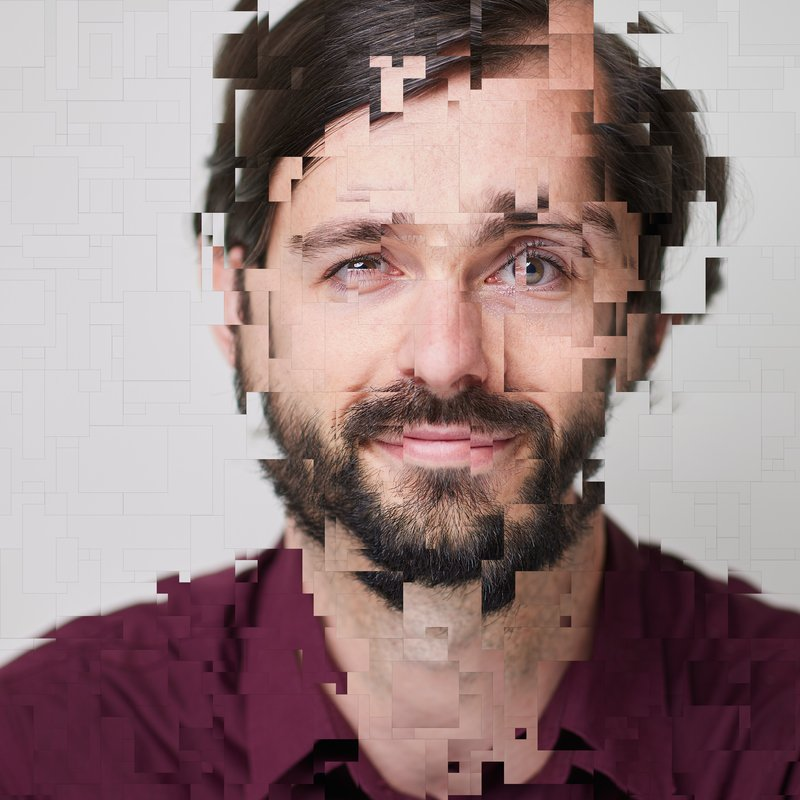

In Ontwikkeling
Proeftuin
Hier groeien de experimenten: bewerkingen van je portret die nog niet goed genoeg zijn voor de Speeltuin. Nog niet af, en misschien nooit af. Upload één foto, kies een bewerking en klik. Sommige zijn elke keer anders: klik nog eens voor een nieuwe versie. Je foto wordt niet bewaard.
Kies Je Foto
Eén keer uploaden is genoeg: dezelfde foto werkt voor alle bewerkingen hieronder.
Pixel Melt
Je foto smelt, als was die te warm is geworden. Alles zakt een beetje uit, en op sommige plekken druipt je gezicht in lange slierten weg: hier schuin naar links, daar naar rechts, in bochten. Elke klik smelt het anders.

Stained Glass
Glas-in-lood van je foto: honderden scherven met loodlijnen ertussen. Kleine scherven waar veel gebeurt (ogen, mond), grote in de achtergrond. Elke klik een ander patroon.

Flow Strokes
Je foto opnieuw geschilderd met duizenden penseelstreken die de vormen van je gezicht volgen, een beetje zoals Van Gogh. Eerst brede streken, dan fijne voor de details.

Square Drift
Honderden rechthoekjes uit je foto, gekopieerd en een stukje verder van het midden weer geplakt. Het midden blijft heel, naar buiten toe valt je foto uiteen. Elke klik een nieuwe versie.
